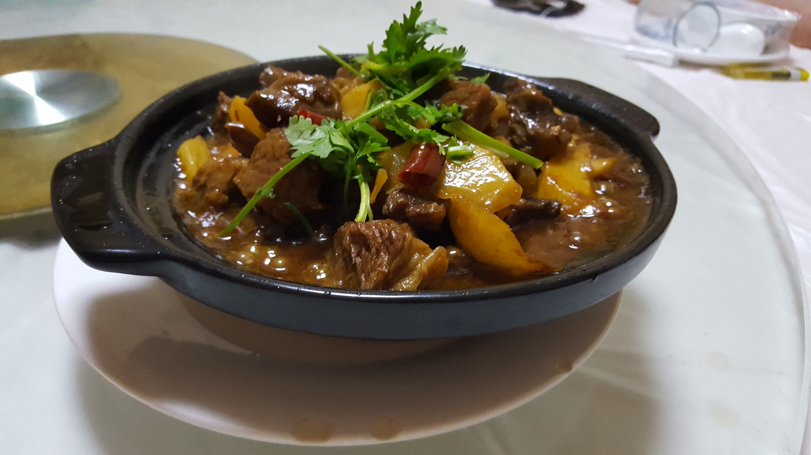
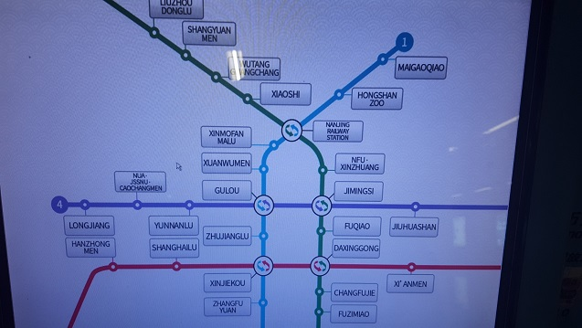

Stay duration: 1 month, 2018
Nanjing was the first place I visited outside of Europe and my introduction to China. I spent one month on a scholarship course as a student of mechanical engineering & mandarin at the Nanjing University of Aeronautics and Astronautics (南京航空航天大学). The summer scholarship was a life changing time, I made some close friends from my own University, from Sweden and from the University itself. I learnt a lot in my time there, not only from my course but from the people there and their way of life, which is so different from my own. Having spent a month there, I experienced a great deal and will attempt to go through my experiences with some coherency.
The first thing I noticed upon arriving in China was the sheer scale of all of the structures there. It seemed that every building I saw broke the record for the tallest building I'd ever seen. This includes the Jiangning building 1, the tall tower in the centre of my campus. The cities in China are often of megalopolis ranking; traveling there gives you a foreshadowing of a cyberpunk future, an ethos which is vibrant and alive in China. There are few places in the world that come so close to the physical incarnation of "blade runner" as cities like Chongqing and Shanghai do. Nanjing, in comparison to its bigger brothers, is much more green and in line with the European sized cities. Downtown Nanjing has its fair share of skyscrapers, but they're balanced by the local fauna not too far from the centre.
Chinese food is completely different to European style food, and completely different to European Chinese food too. From what I could tell, most Chinese people don't have a kitchen in their home, instead they eat out every day, the cheap pricing permits them to do so. At my University campus a large bowl of plain rice cost 0.8元, the equivalent of 9 pence in British Sterling. This coupled with a drink, some fried chicken (the best dish available in the campus, and definitely the most popular), and another dish set me back only around 8元 (90 pence) per meal. After the two weeks of Mandarin, I was proficient enough to order my dishes in the local language. In the campus canteen, you would select your dishes, go to a desk to be given a receipt detailing how much it costs, then go to a cashier and either show them the receipt or tell them the price. I got fairly used to saying Bā kuài and showing the Bā hand gesture - that's right! Mainland China uses specific hand gestures to show numbers 1-10 on only one hand and it's really cool (North Chinese was the one I used).
Other than the campus canteen, I ate out in the local town centre fairly often, sometimes in KFC (which was really popular with the locals) or Burger King but usually in the local restaurants. Chinese waiters would often show you to your table and then stand at your table, sometimes for 10 minutes whilst you and your group perused the menu and decided what to eat, something we all found a little funny and sometimes uncomforting. I was informed that the crayfish were a seasonal local dish, so ate some on my first night. They were quite enjoyable but required thorough effort to get through their shells, I unfortunately cut my gum on one the first night. Not far from the NUAA Jiangning campus is a place literally called "Pakistan Restaurant", they served a great spicy Karahi dish, something that contrasted the local Nanjing cuisine - it was really very mild in flavours generally.

Closeby was a brew dog, very popular with my University group. The owner, called Jerry had us over many evenings to watch the world cup football with him and his cat called Tom (Tom & Jerry, how adorable). In the local supermarket, there were fresh eels, turtles, tortoises and toads for consumption, something you'd never see in Europe. Restaurants would often have cooking ducks in their windows, the head of one I believe was a delicacy.
An area that China unfortunately falls behind in is hygiene. They're still completely dependent on and accustomed to squat toilets, which if you're not used to can really be difficult to use if you're on there for an extended period of time. The Chinese sewage systems wouldn't permit anything other than human waste to be put into it, that means you had to hold your used toilet paper whilst still squatting until you were finished. Afterwards you would bin your toilet paper in a large bin in the centre of the toilet room, which was sometimes overflowing. The smell was incredibly pungent in any non-air conditioned room, that means all corridors and teaching rooms not in use, but thankfully not our dorms. The dorm's showers weren't much better, the floor was thick with clear sludge and the water itself wasn't particularly clean. No Chinese tap water is clean for that matter, it must be boiled before being used for anything; The University water fountains put out boiling hot water. This lack of hygiene did unfortunately translate into the cuisine at times. It wasn't too rare for someone to be off from having food poisoning.
The customs of Chinese culture can sometimes be quite a shock when you're over there. People are eager to take photos of every foreigner they see, even unconsented close-ups. This gets worse the further you go into less international places. Many Chinese people express disapproval and annoyance if they ever have to wait in a queue anywhere, which is doubly painful as Chinese people seem to take forever to order anything. The elderly in China have gotten around this conundrum by trying to cut to the front of any queue they find themselves in. Nobody waits for you to exit before trying to get on any transport, and at times you'll get a gentle push if you're descending an escalator at too leisurely a pace. No Chinese person I ever talked to was ever rude however, and they seemed to be chuffed to hear you speak their native language. I think generally they are a good peoples, they're just not quite as polite. I think being white affords you a certain level of privilege there, I heard a lot of my peers saying they felt more free in China than they did in the U.K. but I'm certain this doesn't apply to all foreigners. China could definitely make your life somewhat difficult if they wanted to.
The public transport there is incredible, and incredibly cheap! It was built very recently and honestly is a standard countries should aspire to. The local underground was well connected and good at keeping congestion down, much better than the London underground in my opinion. There were security checkpoints for entering any underground station however, and embarking on a train journey required you to bring your passport. The trains themselves were nice and spacious, each row was 3 + 2 seats with ample leg room. They reached speeds of ~300km/h, making the journeys out of Nanjing Nan Station quick and enjoyable.

As for Nanjing itself: Fuzimiao was a nice downtown shopping area, the 1912 district gives a decent night out, even though all the clubs seem to exclusively play dubstep. I visited the porcelain tower, which had a lot more to it than just the tower itself and the Nanjing massacre memorial which was very moving.
For a while Nanjing was home, and as a "New Tier 1" city it feels much more familiar and welcoming than the bigger "Tier 1" lot, and even more welcoming than the other cities in its own bracket. I don't see there being much draw for visiting as a tourist, it's more a city to live in.